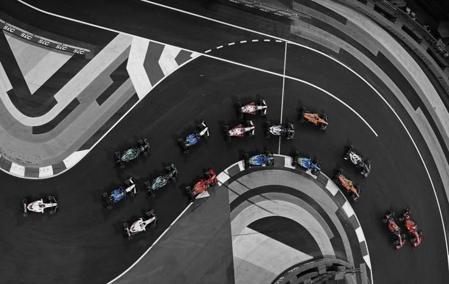

La máxima categoría del automovilismo
"We don't pray for love, we just pray for cars"
¿Qué es la Fórmula 1?
La Fórmula uno, abreviada como F1, es el pináculo del automovilismo deportivo y una de las competiciones más prestigiosas del mundo.
Su historia se remonta a la década de 1950, cuando la Federación internacional del automóvil "FIA" estableció un conjunto de rgulaciones para carreas de automóviles de un solo asientoconocidas como Fórmula 1; la primera carrera oficial de fórmila uno se celebró en 1950 en el circuito de Silverstone, en el Reino Unido, desde entonces la fórmula uno ha evolucionado significativamente, pasando de carreras en circuitos improvisados en carreteras públicas a competiciones en circuitos permanentes especialmente diseñados para la velocidad y la seguridad.
A lo largo de los años la fórmula uno ha sido testigo de numerosos cambios en regulaciones técnicas, equipos, pilotos y circuitos.
Grandes leyendas como Juan Manuel Fangio, Niky Lauda, Alain Prost, Ayrton Senna, Michael Schumacher, Fernando Alonso y Lewis Hamilton han dejado su huella en la historia del deporte con emocionantes batallas en la pista y logros impresionantes.
Hoy en día la Fórmula uno es un espectáculo global que se celebra en diferentes continentes y atrae a millones de espectadores en todo el mundo; con tecnología de vanguardia, velocidad vertigionosa y una pasión inigualable. la Fórmula uno continúa siendo el pináculo del auromovilismo deportivo y una de las competiciones más emocionantes del planeta.
La Fórmula 1, tal como la conocemos hoy, comenzó en 1950 con el primer Campeonato Mundial organizado por la FIA. La carrera inaugural se disputó en Silverstone, y desde entonces, la F1 se convirtió en el pináculo del automovilismo. En esos primeros años, equipos como Alfa Romeo, Ferrari y Maserati marcaron el ritmo, y pilotos legendarios como Juan Manuel Fangio empezaron a escribir la historia del deporte.
Durante los años 60, la categoría vivió una gran transformación. La ingeniería avanzaba a pasos agigantados, con cambios radicales como el traslado del motor a la parte trasera del coche. Pilotos como Jim Clark y Jackie Stewart brillaron en una época en la que el talento se mezclaba con un altísimo riesgo, ya que la seguridad era mínima.
En los 70, la F1 se volvió más profesional y tecnológica. Aparecen grandes nombres como Lotus, McLaren y Williams. Se introducen los alerones y la aerodinámica empieza a ser clave. También fue una década marcada por tragedias que impulsaron los primeros pasos serios hacia una F1 más segura.
Los años 80 trajeron la era de los motores turbo, el auge de la electrónica y una de las épocas más emocionantes para los fans. Las batallas entre Ayrton Senna, Alain Prost, Niki Lauda y Nelson Piquet se volvieron legendarias. Era una mezcla explosiva de talento puro, rivalidades intensas y coches extremadamente potentes.
En los 90, Michael Schumacher emergió como la nueva superestrella. Ganó dos títulos con Benetton y luego comenzó su histórica era con Ferrari, donde dominaría los 2000. Esa época vio una F1 más estratégica, con repostajes, mejoras aerodinámicas constantes y avances en la telemetría.
Ya en los 2010, el deporte entró en la era híbrida. En 2014, con nuevos motores más eficientes, Mercedes-AMG comenzó un dominio brutal. Lewis Hamilton se convirtió en el piloto más exitoso de la historia moderna, ganando múltiples títulos y llevándose récords que antes parecían intocables.
En 2021, llegó una de las temporadas más intensas que se recuerden: la lucha entre Hamilton y Max Verstappen terminó de forma polémica en Abu Dhabi, dándole a Verstappen su primer título. A partir de ahí, Red Bull y Max entraron en una racha dominante, especialmente con el cambio de reglamento técnico en 2022 que introdujo nuevos diseños enfocados en el efecto suelo.
Hoy en día, la F1 es más global que nunca, con carreras en todos los continentes, una base de fans enorme y una presencia masiva en redes sociales. Con nuevas generaciones de pilotos, tecnología puntera y un enfoque más sostenible, el futuro de la F1 promete ser tan emocionante como su pasado.
